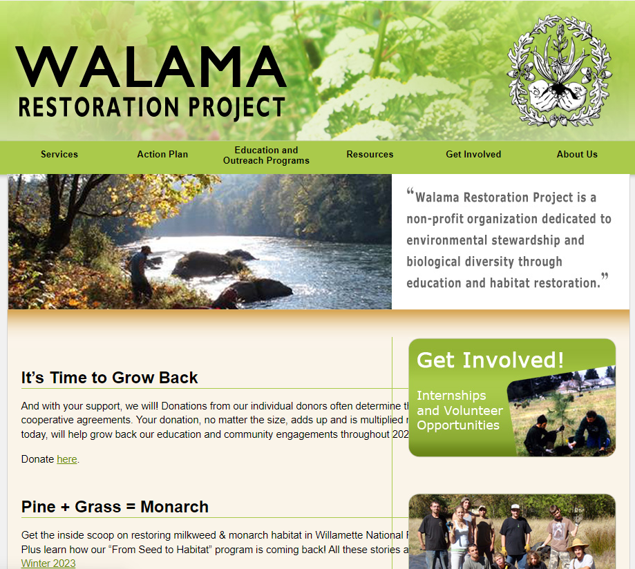
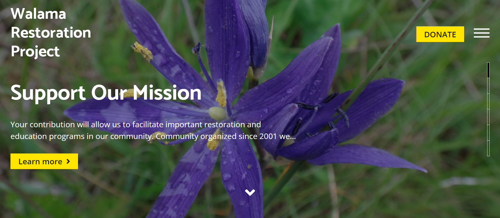
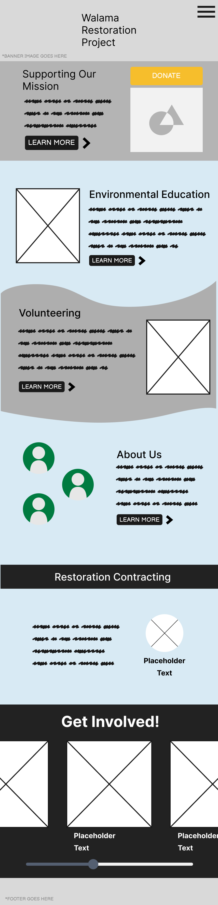
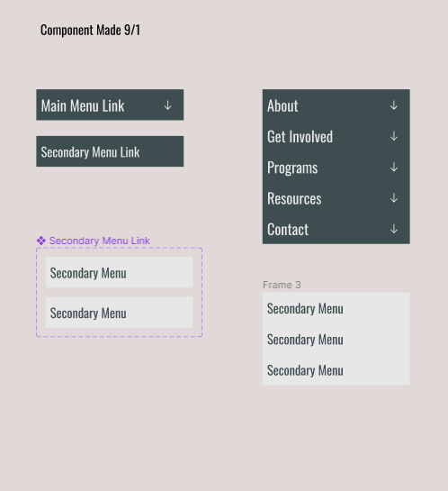
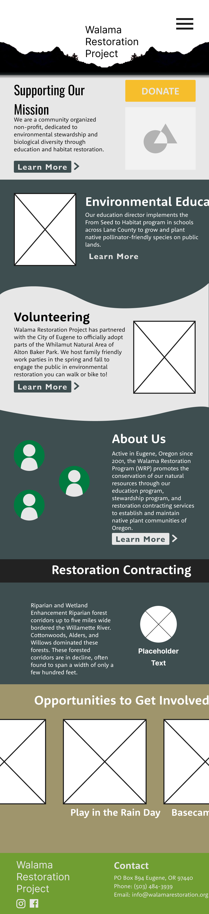
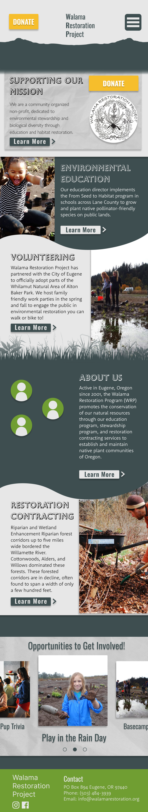
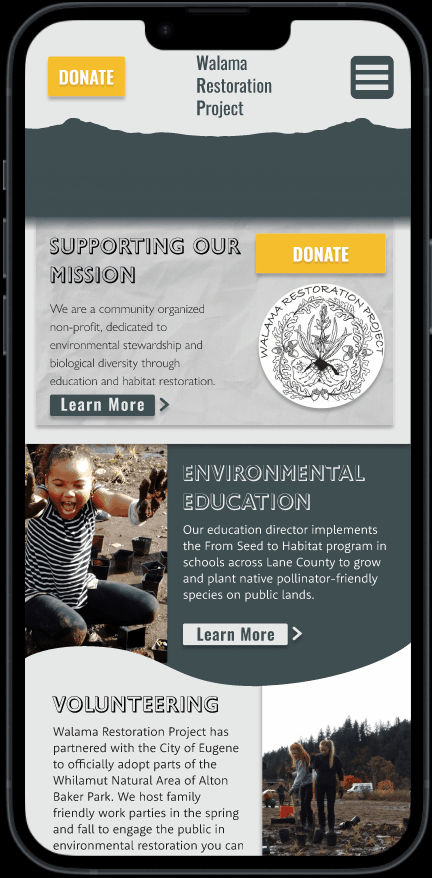

Introduction
This case study contains the three week long development process of a prospective total mobile website redesign of the Walama Restoration Project, based out of Eugene Oregon. We were pleased to work with a correspondent, Barbara Bochnovik, from the organization.
Current WRP Website
The current WRP website is outdated and relatively basic. Certain elements obscured each other on the homepage, the layout was simplistic and there were few graphical elements. Far from functional, what the site really needed was care and modern updating that the nonprofit deserved.
Stakeholder Outreach
I had worked as a canvasser for Walama Restoration Project several years ago. Due to my prior interaction with WRP, I made contact with them via email to tell them about our project and ask for an interview.
Research
Barbara had mentioned a “Development Website” that was being worked on up until the COVID-19 pandemic. The site looked good, and provided much of the information architecture and assets (Mostly photography) which we would end up using.
Key Insights
Site needs to be mobile-first Donation and volunteering should be easy to access and prominent Color and text styles should be playful, but professional Emphasize the organization’s activity in education.
Storyboarding
After we consolidated the information from the stakeholder interview with card sorting and the site map was complete, the team brainstormed a narrative for a storyboard, while I sketched each panel for a visual representation of how a user would use the site.
.png)
Wireframing
After we found a sketch combination that we liked, we immediately got to work on a basic wireframe in Figma. We retained the prioritization of info from the the Development Website as it represented actions a prospective user might take.
Component Creation
After the card sorting, storyboarding, and wireframing, I went to work on creating components for the prototype. Developing the prototype involved working on a hamburger menu that didn't clash with the rest of the layout.
Low-Fi Prototype
When we found a sketch combination we liked, we immediately got to work on a low-fi prototype implementing the components I designed.
Testing
For our first testable prototype, we received insightful feedback, which included: More breathing room (Especially with header), carousel needs breadcrumbs, standardize the Lean More button, make header larger.
Final Prototype
For the high fidelity prototype based on our feedback, I helped with streamlining our design. Including tracing a new vector out of Spencer Butte for the site header. We also included a vector of native grass as a gradient border that really coincided with the mission of the nonprofit.
Conclusion
Based on our highly constructive feedback, as well as a decent foundation from a previous redesign project. We were able to create an updated website for the Walama Restoration Project that was mobile friendly. Which would allow their canvassers to share content with contacts on turf in real time.
